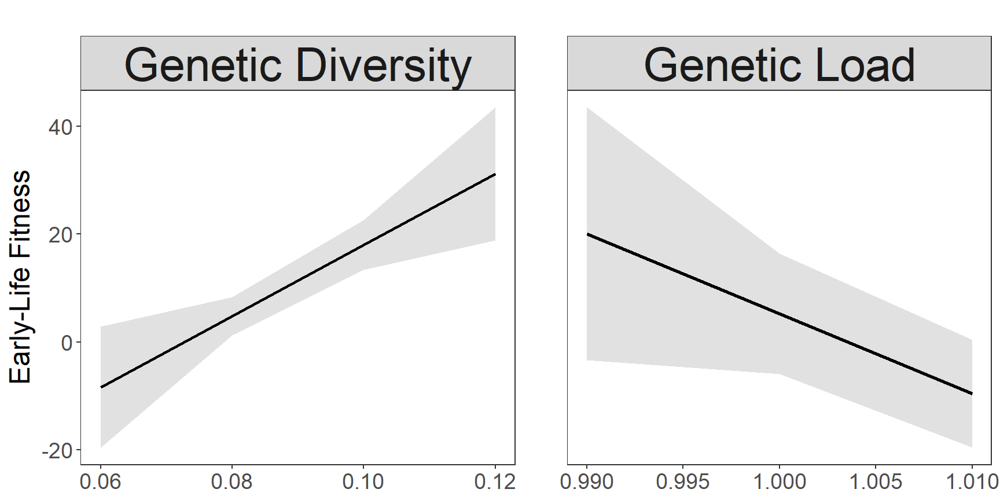

require(tidyverse)
require(lmerTest)
require(sjPlot)
require(ggpubr)1 Why GD and GL?
Capblancq et al. (2021) observed strong positive association between genetic diversity (GD) and Early-Life fitness, and negative assoaciation between genetic load (GL) and Early-Life fitness of red spruce. We use this information for the range edge of red spruce to select for source combinations with high GD and low GL. The fitness was estimated based on the mean family level fitness for each populations. The mean of the resulting pop combinations are then used as fitness estimate for the respective combinations.
1.1 Genetic diversity and Genetic load
GDGL_list <- readRDS("./data/Genetic_diversity_and_Genetic_load/GDGL_list")
MD_GDGL <- GDGL_list$Maryland_GDGL
WV_GDGL <- GDGL_list$West_Virginia_GDGL
VA_GDGL <- GDGL_list$Virginia_GDGL
MD_GDGL <- MD_GDGL[-1,]
WV_GDGL <- WV_GDGL[-1,]
VA_GDGL <- VA_GDGL[-1,]1.2 Early-Life fitness
fitness <- read.table("./data/FitnessTraits_GeneticParameters_RedSpruce.txt",
header = T, stringsAsFactors = T)
fitness$Region <- factor(fitness$Region, levels = c("C","M","E"),
labels = c("Core","Margin","Edge"))1.3 Model stats
# model
modelFitness <- lm(Fitness ~ Population_Homozygosity + Family_Homozygosity + Genetic_Diversity + Genetic_Load + SeedWeight, data=fitness %>% filter(Region=="Edge"))
# modelFitness <- lm(Fitness ~ Genetic_Diversity + Genetic_Load + SeedWeight + Region + Region*Genetic_Diversity + Region*Genetic_Load, data=fitness)
summary(modelFitness)
Call:
lm(formula = Fitness ~ Population_Homozygosity + Family_Homozygosity +
Genetic_Diversity + Genetic_Load + SeedWeight, data = fitness %>%
filter(Region == "Edge"))
Residuals:
Min 1Q Median 3Q Max
-10.8125 -3.8816 -0.0977 3.0421 16.1853
Coefficients:
Estimate Std. Error t value Pr(>|t|)
(Intercept) 171.160 114.954 1.489 0.13981
Population_Homozygosity -1502.700 555.629 -2.705 0.00811 **
Family_Homozygosity 9.763 45.974 0.212 0.83229
Genetic_Diversity 658.994 196.546 3.353 0.00115 **
Genetic_Load -222.175 106.385 -2.088 0.03944 *
SeedWeight 2031.839 688.135 2.953 0.00397 **
---
Signif. codes: 0 '***' 0.001 '**' 0.01 '*' 0.05 '.' 0.1 ' ' 1
Residual standard error: 5.968 on 95 degrees of freedom
Multiple R-squared: 0.1985, Adjusted R-squared: 0.1563
F-statistic: 4.705 on 5 and 95 DF, p-value: 0.00069821.4 Model Viz.
# model marginal effects
p1 <- plot_model(modelFitness, type = "pred", terms = c("Genetic_Diversity"),
title = "", axis.title = "") +
# aes(linetype=group,color=group)+
geom_line(alpha=1, linewidth=1) +
# scale_linetype_manual(values = c("solid", "dashed", "dotted"),
# name = "Region",
# labels = c("Core", "Margin","Edge"))+
facet_wrap(~"Genetic Diversity") +
# ylim(-20,40) +
labs(y="Early-Life Fitness")+
theme_bw(base_size = 11, base_family = "Times") +
theme(axis.text=element_text(size=14),
axis.title=element_text(size=18),
panel.background = element_blank(),
legend.background = element_blank(),
panel.grid = element_blank(),
plot.background = element_blank(),
legend.text=element_text(size=rel(.8)),
strip.text = element_text(size=30)) +
theme(axis.title.x=element_blank(), panel.grid = element_blank(),
legend.key=element_blank(), legend.background=element_blank())
p2 <- plot_model(modelFitness, type = "pred", terms = c("Genetic_Load"),
title = "", axis.title = "") +
# aes(linetype=group,color=group)+
geom_line(alpha=1, size=1) +
# scale_linetype_manual(values = c("solid", "dashed", "dotted"),
# name = "Region",
# labels = c("Core", "Margin","Edge"))+
facet_wrap(~"Genetic Load") +
# ylim(-20,40) +
# labs(color = "Region", linetype = "Region")+
theme_bw(base_size = 11, base_family = "Times") +
theme(axis.text=element_text(size=14),
axis.title=element_text(size=18),
panel.background = element_blank(),
legend.background = element_blank(),
panel.grid = element_blank(),
plot.background = element_blank(),
legend.text=element_text(size=rel(.8)),
strip.text = element_text(size=30)) +
theme(axis.title.x=element_blank(), axis.text.y = element_blank(), axis.ticks.y = element_blank(), panel.grid = element_blank())# dim 900w 450h jpg 4.5h 9w pdf
ggarrange(p1,p2, ncol = 2, common.legend = T, legend = "right", widths = c(1.1,1,1,1))